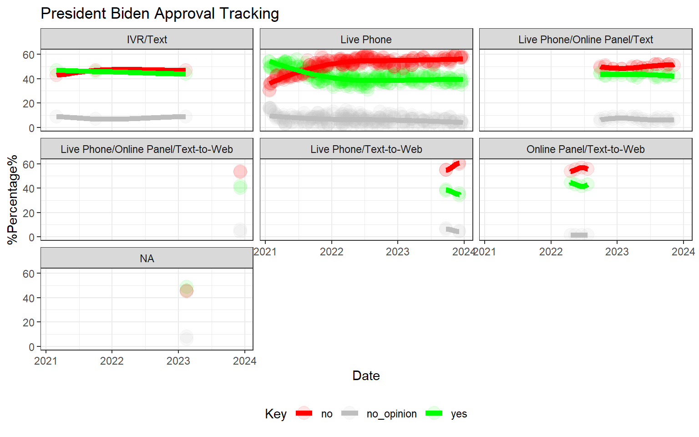

Projects Blog
2024-01-16
1 Project Biden
Project Biden is tracking the approval ratings since the beginning of the first term in 2021. The polls used are sourced from 538.com and filtered by their A ratings
1.1 Biden approval tracking
The tracking uses polls with rating of A by 538.com. The pollsters/firms used are ABC/Washington Post, Beacon/Shaw(Fox News),Cygnal(Republican),Marist Polls(NPR/PBS),Monmouth University, PPP(Democratic),Quinnipiac University,Selzer & Co(Grinnell College),Siena/NYT and suffolk University.
